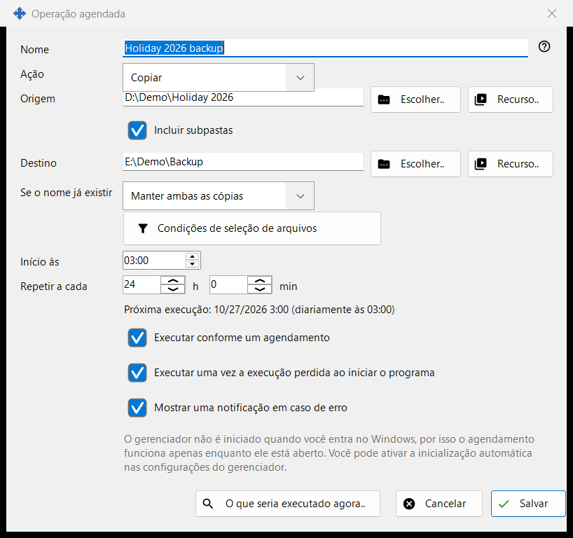
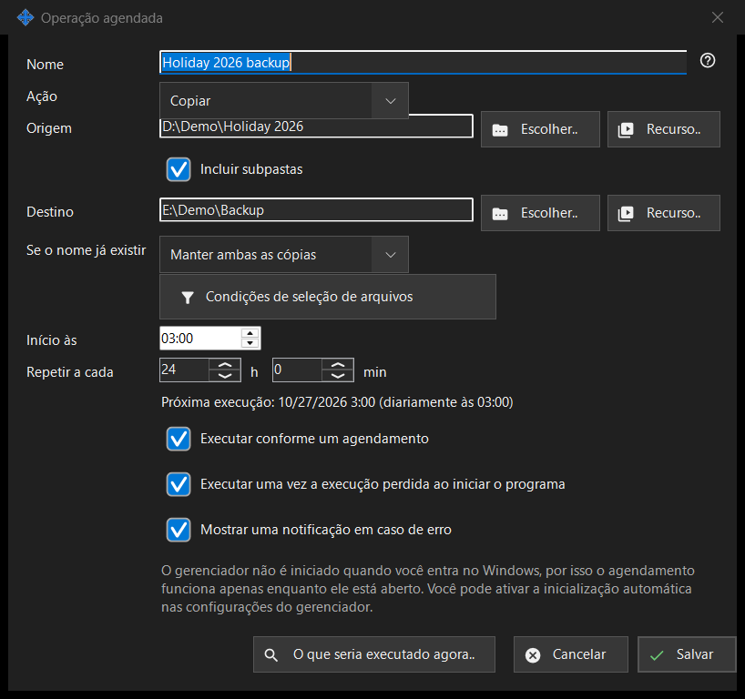

Operação agendada
Finalidade
Edita uma operação de arquivos agendada: copiar, mover, excluir ou arquivar arquivos de uma origem para um destino segundo um agendamento repetido. Abre-se a partir de «Nova..» ou «Editar..» na página «Operações de arquivo agendadas» das configurações do Share Manager e a partir do item do menu de pasta do visualizador «Agendar uma operação para esta pasta..», que preenche essa pasta como origem.


Nesta ordem
- Informe um Nome e escolha a Ação.
- Defina a Origem e, para copiar, mover e arquivar, o Destino, com «Escolher..», «Recurso..» ou «Pelo Google Drive».
- Para copiar e mover, escolha o que acontece «Se o nome já existir».
- Abra «Condições de seleção de arquivos» para restringir os arquivos.
- Defina «Início às» e «Repetir a cada» e mantenha «Executar conforme um agendamento» marcada.
- Confira «O que seria executado agora..» e clique em «Salvar».
Os elementos
Ação e conflitos de nome
A Ação é Copiar, Mover, Excluir ou Arquivar, e a janela mostra apenas as linhas de que essa ação precisa: Excluir não tem Destino; «Se o nome já existir» (Ignorar, Substituir, Manter ambas as cópias) aparece apenas para Copiar e Mover; «Excluir os arquivos originais após a verificação do arquivo compactado» aparece apenas para Arquivar e remove os originais somente depois que o arquivo compactado for relido e verificado.
Origem e destino
Digite um caminho completo ou clique em «Escolher..». «Recurso..» escolhe um servidor SFTP ou uma pasta de rede na lista de recursos do visualizador e não é oferecido para Arquivar, que aceita apenas pastas comuns e o Google Drive. «Pelo Google Drive» aparece apenas quando você entrou no Drive ou esse lado já o usa. Quando «Incluir subpastas» está desativada, apenas os arquivos da própria pasta de origem são processados. «Salvar» recusa pastas do sistema e de programas e um destino igual à origem ou dentro dela, e diz o que está errado.
Exclusão de arquivos
Quando arquivos forem removidos (Excluir, ou Arquivar com a opção dos originais), uma linha «Excluir: ..» informa para onde vão: para a Lixeira ou permanentemente, com o motivo, por exemplo um disco de rede ou removível não tem Lixeira. Para uma operação assim, Enter não salva; clique em «Salvar» de propósito. Uma execução agendada nunca faz perguntas e registra para onde foram os arquivos excluídos.
Condições de seleção de arquivos
O painel abre-se sozinho quando as condições diferem das predefinidas. Tipos de arquivo: Todos os ficheiros, Imagens, Áudio, Vídeo, Documentos («Todos os ficheiros» desativa os outros quatro). Modificado em: Todo o período, Novos desde a última execução, Última hora, Últimas 24 horas. «Máscara de nome» e «Excluir por máscara» aceitam várias máscaras separadas por ponto e vírgula, por exemplo *.jpg;IMG_??.png, comparadas com o nome do arquivo. «Mais antigo que» e «Mais recente que» são em dias e horas, «Tamanho maior que» e «Tamanho menor que» em MB. «Incluir arquivos ocultos e de sistema» vem desativada por predefinição.
Agendamento
«Início às» define a hora do dia e «Repetir a cada» o intervalo em horas e minutos; um número inteiro de dias repete-se à mesma hora. A linha abaixo mostra «Próxima execução: hora (regra)» ou «O agendamento está desativado: a operação é executada apenas manualmente.» «Executar uma vez a execução perdida ao iniciar o programa» e «Mostrar uma notificação em caso de erro» são opções separadas. Outra linha informa que o agendamento só funciona enquanto o Share Manager está em execução e se ele inicia no login do Windows; nada nesta janela altera o início automático.
Pré-visualização e Salvar
«O que seria executado agora..» lista os arquivos que a operação processaria e não altera nada; uma execução não precisa dela. «Salvar» guarda a operação ou lista o que precisa ser corrigido. «Cancelar» descarta as suas edições.
Definições do gestor · Definições de partilha SFTP · Definições do servidor de troca